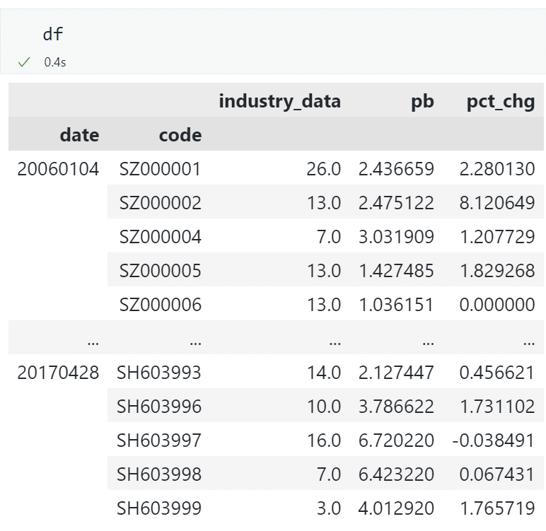
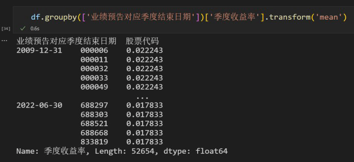
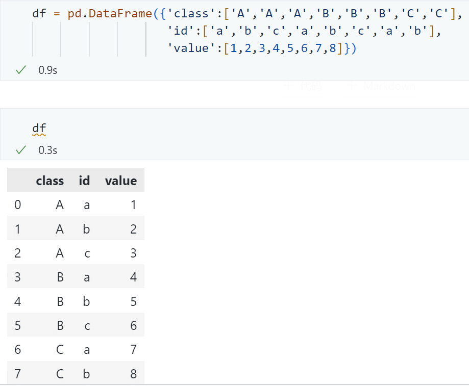

Pandas 数据框¶
创建测试对象¶
测试对象有助于帮助我们快速直观地理解某段代码的用法，而不需要花太多时间寻找合适的数据集。
# 创建 20 行 5 列的随机数组成的 DataFrame 对象
pd.DataFrame(np.random.rand(20, 5))
# 从可迭代对象 my_list 创建一个 Series 对象
pd.Series(my_list)
# 增加一个日期索引
df.index = pd.date_range("1900/1/30", periods=df.shape[0])
# 创建随机数据集
df = pd._testing.makeDataFrame()
# 创建随机日期索引数据集
df = pd._testing.makePeriodFrame()
df = pd._testing.makeTimeDataFrame()
# 创建随机混合类型数据集
df = pd._testing.makeMixedDataFrame()
旧版本使用 pd.util.testing 生成随机数据框
索引¶
通过行号求索引值¶
通过索引值求所在行号¶
求单个索引所在行号：
求多个索引所在行号：
参考：https://stackoverflow.com/a/65014035/
将一列数据作为索引¶
自定义索引¶
生成日期索引¶
- 手动输入起始日期和间隔，生成日期索引
pandas自带的日期和时间频率：
自带日期和时间频率的官方文档：https://pandas.pydata.org/pandas-docs/stable/user_guide/timeseries.html#dateoffset-objects
- 从字符串类型的日期生成日期格式的索引
从 series1 中提取出 series2 的 index 对应的数据¶
如果 series2 中的索引比 series1 中的索引少，则相当于对 series1 做切片操作。
将表格按照索引排序¶
ascending=False代表降序排列，即从大到小排列。
切片¶
提取出不连续的列¶
例如，我们需要提取出第 0 到 4 列和第 10 到第 14 列的数据，可以用
参考：
https://stackoverflow.com/a/53052944/
https://numpy.org/doc/stable/reference/generated/numpy.r_.html
空值¶
只输出有空值的行和列¶
记录一个 Series 中非空值的个数¶
查看哪些列有空值，以及这些列有几个空值¶
删除含有空值的行或列¶
axis： 0: 行操作（默认） 1: 列操作how： any: 只要有空值就删除（默认） all: 全部为空值才删除inplace： False: 返回新的数据集（默认） True: 在原数据集上操作
对全是空值 NaN 的数据求和¶
对全是空值 NaN 的数据求和，默认结果为 0，若想得到 NaN 可以添加 min_count=1
参考：https://stackoverflow.com/a/56982952/
按照数值大小填充底色¶
import pandas as pd
import numpy as np
import matplotlib.pyplot as plt
from matplotlib.colors import rgb2hex
# 假设你有一个 DataFrame
df = pd.DataFrame({
'A': [1, 2, 3, 4, 5],
'B': [5, 4, 3, 2, 1],
'C': [2, 3, 4, 5, 1]
})
# 定义一个函数来使用 cmap 颜色映射
def color_gradient(val, cmap, max_val, min_val):
norm = (val - min_val) / (max_val - min_val) # 归一化
rgba_color = cmap(norm)
# 将 RGBA 转换为 HEX 格式
return f'background-color: {rgb2hex(rgba_color[:3])}'
def apply_gradient_to_column(column):
cmap = plt.cm.get_cmap("RdYlGn_r") # 使用 RdYlGn_r 颜色映射
max_val = column.max()
min_val = column.min()
return [color_gradient(val, cmap, max_val, min_val) for val in column]
# 使用 apply 方法将颜色应用到 DataFrame 的每一列
styled_df = df.style.apply(apply_gradient_to_column, axis=0)
# 显示结果
styled_df
修改¶
读取数据，指定列名¶
读取 csv 文件时可以用 names 指定列名。
df = pd.read_csv(
"../../data/Q2_data.csv",
header=None,
names=["Date", "Time", "Open", "High", "Low", "Close", "Volume"],
)
修改 Series 的列名¶
修改数据框的列名¶
- 修改列名 a，b 为 A、B。
注意
修改列名时，不允许切片操作，只能按照原数据长建立一个列表赋值修改。参考https://blog.csdn.net/Forrest97/article/details/119791338。
- 只修改列名 a 为 A
修改列名为 MultiIndex 的数据框的列名¶
当数据框的列名为 MultiIndex 时，不能直接设置参数 mapper 来指定新旧列名的对应关系，但可以设置参数 level 来指定修改哪一层的列名：
如果想直接设置参数 mapper 来指定新旧列名的对应关系，可以先得到 MultiIndex 的列名的 tuples 形式，再用 pd.MultiIndex.from_tuples 转换回 MultiIndex：
mapping = {('feature', 'close'): ('feature', 'close_new'), ('feature', 'pctchange'): ('feature', 'pctchange_new')}
df.columns = pd.MultiIndex.from tuples([mapping.get(x, x)for x in df.columns])
将一个列表（List）赋值到 DataFrame 的一个单元格（Cell）中¶
- 首先需要确保这个单元格所在的列的数据类型是
object； - 用
df.at[index_value , column_name] = [1, 2, 3]即可将列表赋值到这个单元格中。

-
注意，不能用
df.loc[index_value , column_name] = [1, 2, 3]来进行赋值，否则会报错ValueError: Must have equal len keys and value when setting with an iterable，这是因为程序默认是不会将列表整体赋值到单元格，但不知道要将列表中的哪一个元素赋值到单元格。 -
并且，如果这个单元格所在的列的数据类型不是
object，用df.at[index_value , column_name] = [1, 2, 3]也会产生上述报错。
找到数据框的某一列中的非重复值¶
注意，单元格中的值不能是 list、array 这样的数据结构，否则会报错unhashable。推测底层的代码是将所有的单元格取哈希值，再比较哈希值是否非重复。
将每行排名在 100 名之后的数值设为 0¶
知识点： .mask() 和 .rank()
参考：https://stackoverflow.com/a/53169636/
将每行排名在 100 名之后的数值设为 0¶
知识点： .mask() 和 .rank()
参考：https://stackoverflow.com/a/53169636/
对于 np.ndarray 格式的数据，可以参考。
将对角线元素设为 np.nan¶
知识点： np.diag_indices_from(df)
合并¶
将一个数据框添加到另一个数据框的底部¶
水平（左右）合并多个序列¶
.join()¶
df = (
s1.rename("col_name_1")
.to_frame()
.join(s2.rename("col_name_2").to_frame(), how="inner")
.join(s3.rename("col_name_3").to_frame(), how="inner")
)
.concat()¶
df = pd.concat(
[
s1.rename("col_name_1"),
s2.rename("col_name_2"),
s3.rename("col_name_3"),
],
axis=1,
)
.join()¶
df = (
s1.rename("col_name_1")
.to_frame()
.join(s2.rename("col_name_2").to_frame(), how="inner")
.join(s3.rename("col_name_3").to_frame(), how="inner")
)
.merge()¶
# 左右两个数据框合并，基于相同的列名
new_df = pd.merge(A_df, B_df, how="left", on=["c1", "c2"])
# 左右两个数据框合并，但需要基于不同的列名
new_df = pd.merge(
A_df, B_df, how="left", left_on=["A_c1", "c2"], right_on=["B_c1", "c2"]
)
datetime¶
各种 datetime 的缩写
将一列 str 格式的时间，转换为 datetime 格式¶
提取 datetime 中的年和月，返回字符串 "2023-01" 的格式¶
提取 datetime 中的日期，返回字符串 "2023-01-01" 的格式¶
提取 datetime 中的日期，返回 datetime 格式¶
提取 datetime 中的星期，返回字符串 "Monday" 格式¶
>>> s = pd.Series(pd.date_range(start="2018-01-01", freq="D", periods=3))
>>> s
0 2018-01-01
1 2018-01-02
2 2018-01-03
dtype: datetime64[ns]
>>> s.dt.day_name()
0 Monday
1 Tuesday
2 Wednesday
dtype: object
提取 datetime 在当年的第几天，返回 int 格式¶
当月、当周、当年的第几天：
-
Period.day: Return the day of the month. -
Period.day_of_week: Return the day of week. -
PeriodIndex.day_of_year: Return the day of year of all indexes.
>>> s = pd.Series(["1/1/2020 10:00:00+00:00", "2/1/2020 11:00:00+00:00"])
>>> s = pd.to_datetime(s)
>>> s
0 2020-01-01 10:00:00+00:00
1 2020-02-01 11:00:00+00:00
dtype: datetime64[ns, UTC]
>>> s.dt.dayofyear
0 1
1 32
dtype: int32
判断是否大于某个日期¶
其中 "交易日期" 列是 datetime 格式。
将两列 str 格式的日期和时间，合并后转换为 datetime 格式¶
现有数据框：
# 将 Date 和 Time 合并为一个 datetime 类型的列
df.insert(
2,
"datetime",
pd.to_datetime(
df["Date"].astype(str) + " " + df["Time"].astype(str), format="%m/%d/%Y %H%M"
),
)
转换后的数据框：
合并日期和时间¶
使用 datetime.dateime.combine()：
from datetime import datetime, date, time
# 创建日期对象
d = date(2023, 8, 7)
# 创建时间对象
t = time(12, 30)
# 合并日期和时间
dt = datetime.combine(d, t)
# 输出结果
print(dt)
# 2023-08-07 12:30:00
判断某个 datetime.time 格式的时间是否在某个范围¶
判断Timestamp变量的值¶
- 判断一个
Timestamp的值
可以将Timestamp转换为str再判断：
- 判断一个
TimestampSeries 的值
用map函数对整个 Series 进行操作：
多重索引，限制时间索引属于某一时间¶
minute_data[
(pd.Timestamp("2018-01-02") < minute_data.index.get_level_values("datetime"))
& (minute_data.index.get_level_values("datetime") < pd.Timestamp("2018-01-03"))
]
多重索引，修改其中的一层索引为日期格式¶
df.index = df.index.set_levels(
[pd.to_datetime(df.index.levels[0].astype(str)), df.index.levels[1]]
)
查看效果
修改前：

修改后：
筛选指定日期段的数据¶
date
2023-03-13 09:30:00 46.00
2023-03-13 09:31:00 46.11
2023-03-13 09:32:00 46.21
2023-03-13 09:33:00 46.17
2023-03-13 09:34:00 46.18
...
2023-03-17 14:56:00 46.34
2023-03-17 14:57:00 46.34
2023-03-17 14:58:00 46.34
2023-03-17 14:59:00 46.34
2023-03-17 15:00:00 46.20
Name: close, Length: 1205, dtype: float64
仅筛选出2023-03-13这一天的数据：
得到：
date
2023-03-13 09:30:00 46.00
2023-03-13 09:31:00 46.11
2023-03-13 09:32:00 46.21
2023-03-13 09:33:00 46.17
2023-03-13 09:34:00 46.18
...
2023-03-13 14:56:00 46.46
2023-03-13 14:57:00 46.47
2023-03-13 14:58:00 46.48
2023-03-13 14:59:00 46.48
2023-03-13 15:00:00 46.50
Name: close, Length: 241, dtype: float64
筛选指定时间段的数据¶
查看效果
这个方法只能筛选一个连续时间段的数据，如果要筛选上午和下午的交易时间段的数据，可以用：
idx1 = df.index.indexer_between_time("9:30", "11:30")
idx2 = df.index.indexer_between_time("13:00", "15:00")
df = df.iloc[np.union1d(idx1, idx2)]
参考：https://stackoverflow.com/a/63410085/
查看效果
筛选指定时间点的数据¶
参考：https://stackoverflow.com/a/63410085/，https://stackoverflow.com/a/63410085/
resample¶
将日频数据 resample 到月频数据，只取每月的最后一行数据¶
默认是日期在索引当中，不需要指定参数on。
也可以指定日期来自哪一列指定参数on为：
首先对时间序列数据进行频率转换，转换为月度频率：
然后使用 last 参数获取每个月最后一个时间点的数据：
设置 resample 后的数据以哪个时点作为索引（可选起始时点或结束时点）¶
很多时候 resample 后的数据默认是起始时间作为索引。例如以 9:00 作为索引，它统计了 9:00 至 10:00 的数据。如果我们希望以 10:00 作为索引，来统计 9:00 至 10:00 的数据，可以设置 closed='right' 和 label='right'。
代码示例：
periods = pd.date_range("2020-10-17 15:53:00", "2020-10-17 15:53:10", freq="1s")
ts = pd.Series(range(len(periods)), index=periods)
参考：https://blog.csdn.net/ljr_123/article/details/114700836
这两个参数有点难理解，还是多尝试看看效果吧！
不加参数：
periods = pd.date_range("2020-10-17 15:53:00", "2020-10-17 15:53:10", freq="1s")
ts = pd.Series(range(len(periods)), index=periods)
resampled = ts.resample("5s").last()
resampled
2020-10-17 15:53:00 4
2020-10-17 15:53:05 9
2020-10-17 15:53:10 10
Freq: 5S, dtype: int64
添加 closed='right'：
periods = pd.date_range("2020-10-17 15:53:00", "2020-10-17 15:53:10", freq="1s")
ts = pd.Series(range(len(periods)), index=periods)
resampled = ts.resample("5s", closed="right").last()
resampled
2020-10-17 15:52:55 0
2020-10-17 15:53:00 5
2020-10-17 15:53:05 10
Freq: 5S, dtype: int64
添加 label='right'：
periods = pd.date_range("2020-10-17 15:53:00", "2020-10-17 15:53:10", freq="1s")
ts = pd.Series(range(len(periods)), index=periods)
resampled = ts.resample("5s", label="right").last()
resampled
2020-10-17 15:53:05 4
2020-10-17 15:53:10 9
2020-10-17 15:53:15 10
Freq: 5S, dtype: int64
添加 closed='right', label='right'：
periods = pd.date_range("2020-10-17 15:53:00", "2020-10-17 15:53:10", freq="1s")
ts = pd.Series(range(len(periods)), index=periods)
resampled = ts.resample("5s", closed="right", label="right").last()
resampled
2020-10-17 15:53:00 0
2020-10-17 15:53:05 5
2020-10-17 15:53:10 10
Freq: 5S, dtype: int64
参考：https://stackoverflow.com/a/64409555/
根据固定整数间隔重采样 resample¶
参考：https://stackoverflow.com/q/47197007/
将空缺的秒钟数据用前一个秒钟数据填补（重采样并填充空缺值）¶
有一个 pandas 数据框，其中有一列是字符串格式的秒钟数据，例如"09:15:00"、"09:15:04"。除此之外，还有一些列。我需要将空缺的秒钟数据用上一秒钟的数据填充上，最终形成一个完整的包含所有秒钟的数据。
可以按以下步骤操作：
-
将秒钟数据转换为 datetime 对象，并设置为数据框的索引。
-
使用 resample 方法将数据按秒钟重采样，以确保所有秒钟都被包含，并使用 ffill 方法向前填充空缺的值。
-
如果需要，重新设置索引为原来的列。
下面是完整的代码示例：
import pandas as pd
# 创建示例数据框
df = pd.DataFrame(
{"seconds": ["09:15:00", "09:15:04", "09:15:08"], "other_column": [1, 2, 3]}
)
# 将秒钟数据转换为 datetime 对象，并设置为索引
df["seconds"] = pd.to_datetime(df["seconds"])
df.set_index("seconds", inplace=True)
# 重采样并填充空缺值
df = df.resample("S").ffill()
# 重新设置索引
df.reset_index(inplace=True)
# 输出结果
print(df)
输出结果为：
seconds other_column
0 2022-09-01 09:15:00 1
1 2022-09-01 09:15:01 1
2 2022-09-01 09:15:02 1
3 2022-09-01 09:15:03 1
4 2022-09-01 09:15:04 2
5 2022-09-01 09:15:05 2
6 2022-09-01 09:15:06 2
7 2022-09-01 09:15:07 2
8 2022-09-01 09:15:08 3
去除由 .ffill() 填充的非交易日的数据（如周末）¶
# 去除由 .ffill() 填充的非交易日的数据（如周末）
minute_trade = minute_trade[
np.isin(
pd.to_datetime(minute_trade.index.date),
pd.to_datetime(trade["Qdate"].unique()),
)
]
rolling¶
closed 参数控制左右开闭：
import pandas as pd
data = {"A": [1, 2, 3, 4, 5]}
df = pd.DataFrame(data)
# 设置窗口大小为 2，默认是左开右闭
df["rolling"] = df["A"].rolling(window=2).sum()
# 设置窗口大小为 2，左开右闭
df["rolling_right"] = df["A"].rolling(window=2, closed="right").sum()
# 设置窗口大小为 2，左闭右开
df["rolling_left"] = df["A"].rolling(window=2, closed="left").sum()
# 设置窗口大小为 2，左右都闭
df["rolling_both"] = df["A"].rolling(window=2, closed="both").sum()
print(df)
A rolling rolling_right rolling_left rolling_both
0 1 NaN NaN NaN NaN
1 2 3.0 3.0 NaN 3.0
2 3 5.0 5.0 3.0 6.0
3 4 7.0 7.0 5.0 9.0
4 5 9.0 9.0 7.0 12.0
apply¶
官方文档
DataFrame: https://pandas.pydata.org/docs/reference/api/pandas.DataFrame.apply.html
Series: https://pandas.pydata.org/docs/reference/api/pandas.Series.apply.html
使用 apply 函数返回多个值，且整体以数据框的形式返回¶
- 如果只在 function 中返回两个值，则这两个值会以 Tuple 的形式进行组合，最终返回的是一个 Series。这个 Series 中的每一个单元格就是一个 Tuple，一个 Tuple 中包含两个值，分别是 1 和 2。
- 如果想返回一个数据框，这个数据框包含 2 列，可以用：
其中的 index 还可以指定这两列的列名。
- 再使用
df.apply(lambda x: function(x), axis=1)，得到的就是一个两列的数据框了。
使用 apply 函数操作 df 的每一行时，获取这一行的 index¶
- 用
.name
如果原始数据是 pd.Series，则需要先用 .to_frame 将其转换为 pd.DataFrame。
使用 apply 函数并加入if else判断语句¶
使用 apply 函数并展示进度条¶
from tqdm import tqdm
tqdm.pandas()
df_users.groupby(["userID", "requestDate"]).progress_apply(feature_rollup)
使用 apply 函数时传递额外参数¶
下面以 progress_apply 为例，实现传递额外的参数的功能。
要在 progress_apply 中传递额外的参数，可以使用 args 参数来实现。args 是一个元组，其中包含要传递给函数的额外参数。
import pandas as pd
# 定义一个函数，接受两个参数
def my_function(value, param):
# 在函数中使用传递的参数
result = value + param
return result
# 创建一个示例数据框
df = pd.DataFrame({"A": [1, 2, 3], "B": [4, 5, 6]})
# 使用 progress_apply 对每一列应用函数，并传递额外的参数
param = 10
df = df.progress_apply(my_function, args=(param,))
print(df)
在上述示例中，my_function 是一个接受两个参数的函数。我们将 param 设置为额外的参数，并将其作为元组 (param,) 传递给 progress_apply。在函数中，我们可以使用传递的参数 param 进行计算。
groupby¶
对多列进行分组¶
我们需要先对日期分组，在每一天内，再对秒钟进行分组，例如：统计每一天的每一秒内订单的数量。
- 用列表形式存放所有需要分组的列名。
查看效果
查看groupby后每一组的值¶
将 grouped 修改为你构造的 GroupBy object：
for group_name in list(grouped.groups.keys()):
print(group_name)
print(grouped.get_group(group_name))
直接方法：.get_group()¶
间接方法：先获取该组索引，再切片¶
首先获取某个组中所有值在原 df 中的索引：
再根据这些索引从原 df 中提取数据：
查看groupby中每组的第一行¶
.first()
groupby分组后求各组的统计量（如组内均值）¶
这样得到的结果是一个序列，它的行数是分组的个数，值就是每一组的统计量。
查看效果
如果我们想用组内的原始数据，减去这个组整体的均值，有两种方法：
-
第一种方法比较常规，先用上面的代码求出各组的均值，再用 merge 方法，这样分组后的统计量就自动纵向展开到原始数据中了。
-
第二种方法是用
.transform('mean')，这样得到的结果包含每一个原始数据对应的组的均值。

groupby分组后求两列的相关性¶
参考：https://stackoverflow.com/a/59048482
多重索引¶
构造多重索引数据框¶
# 构造数据框，存储结果
idx = pd.MultiIndex.from_product(
[
["Operator norm", "Matrix l1 norm", "Frobenius norm"],
[30, 100, 200],
],
names=["norm_type", "p"],
)
# 定义列名
col_names = ["Universal", "Adaptive", "Adaptive2"]
# 创建空的 DataFrame
table_1 = pd.DataFrame(columns=col_names, index=idx)
将多列数据转换为多重索引¶
还可以通过添加 append=True 参数来保留原有的索引。
将单重索引的列名转换为多重索引¶
要将 Pandas 数据框的列名变成多重索引，可以使用 pandas.MultiIndex.from_tuples() 函数创建一个多重索引对象，然后将其赋给数据框的列名。下面是一个示例代码：
import pandas as pd
# 创建示例数据框
data = {"A": [1, 2, 3], "B": [4, 5, 6], "C": [7, 8, 9]}
df = pd.DataFrame(data)
# 创建多重索引对象
multi_index = pd.MultiIndex.from_tuples(
[("Group 1", "A"), ("Group 1", "B"), ("Group 2", "C")]
)
# 将多重索引对象赋给数据框的列名
df.columns = multi_index
print(df)
输出结果如下：
如果想将所有列名都放到一个分组（"Group 1"）下，可以使用 pandas.MultiIndex.from_product() 函数创建一个包含一个分组的多重索引对象，然后将其赋给数据框的列名。下面是一个示例代码：
import pandas as pd
# 创建示例数据框
data = {"A": [1, 2, 3], "B": [4, 5, 6], "C": [7, 8, 9]}
df = pd.DataFrame(data)
# 创建多重索引对象
multi_index = pd.MultiIndex.from_product([["Group 1"], df.columns])
# 将多重索引对象赋给数据框的列名
df.columns = multi_index
print(df)
输出结果如下：
将多重索引转换为多列数据¶
修改多重索引的名称¶
或用 .set_names()：
参考：https://pandas.pydata.org/docs/reference/api/pandas.Index.set_names.html
交换索引级别的顺序，并按照索引进行排序¶
获取其中的某一个索引¶
修改其中的某一个索引¶
例如，需要修改第 1 层索引为 a_list，可以用
参考： https://pandas.pydata.org/docs/reference/api/pandas.MultiIndex.set_levels.html
或用 pd.Multiindex.from_arrays，注意要用方括号 [ ] 将各层索引括起来。例如需要将第 1 层索引修改为 datetime 格式：
df.index = pd.MultiIndex.from_arrays(
[
df.index.levels[0],
pd.to_datetime(df.index.levels[1]),
]
)
参考： https://pandas.pydata.org/docs/reference/api/pandas.MultiIndex.from_arrays.html
也可以用
https://pandas.pydata.org/docs/reference/api/pandas.MultiIndex.from_tuples.html
https://pandas.pydata.org/docs/reference/api/pandas.MultiIndex.from_product.html
https://pandas.pydata.org/docs/reference/api/pandas.MultiIndex.from_frame.html
根据某一个索引提取数据¶
df = pd.DataFrame(
{
"class": ["A", "A", "A", "B", "B", "B", "C", "C"],
"id": ["a", "b", "c", "a", "b", "c", "a", "b"],
"value": [1, 2, 3, 4, 5, 6, 7, 8],
}
)
df = df.set_index(["class", "id"])
查看效果

查看效果
- 提取出
class（即第一层索引）为'A'的所有数据
loc[(a,b),c]中第一个参数元组为索引内容。a为level0索引对应的内容，b为level1索引对应的内容。
- 这里
'A'，指选择 class 中的 A 类 slice(None), 是 Python 中的切片操作，这里用来选择任意的 id，要注意，不能使用:来指定任意 index-
因为 df 是一个 dataframe，所以要用
c来指定列。:用来指定 dataframe 任意的列 -
提取出
id（即第二层索引）为'a'或'b'的所有数据
多重索引降为单重索引¶
多重索引，限制时间索引属于某一时间¶
minute_data[
(pd.Timestamp("2018-01-02") < minute_data.index.get_level_values("datetime"))
& (minute_data.index.get_level_values("datetime") < pd.Timestamp("2018-01-03"))
]
排序¶
对行按照索引字母表重新排序¶
对列按照列名字母表重新排序¶
只需要设置axix=1即可。
指定列的顺序¶
# 假设 df 是你的数据框，列的顺序是 ['A', 'B', 'C']
df = pd.DataFrame({"A": [1, 2, 3], "B": [4, 5, 6], "C": [7, 8, 9]})
# 改变列的顺序为 ['C', 'A', 'B']
df = df.reindex(columns=["C", "A", "B"])
对某些列按照值的顺序排列¶
df.sort_values(
by=["2022", "2021", "2020"], ascending=False, na_position="last", inplace=True
)
by可以指定对哪些列进行排序。优先排2022年的，如果2022年的数据相同，则继续比较2021年的，以此类推。ascending=False代表降序排列。na_position='last'代表把空值放到最后。inplace=True代表覆盖原始数据。
对某些列按照值自定义排序规则¶
参考：
# 创建一个 DataFrame
df = pd.DataFrame(
{
"A": ["a", "b", "c", "a", "b", "c", "a", "b", "c"],
"B": [1, 2, 3, 4, 5, 6, 7, 8, 9],
}
)
# 创建一个字典，定义排序规则
sort_order_dict = {"c": 1, "a": 2, "b": 3}
# 使用字典映射数据，并按照映射结果进行排序
df = df.sort_values(by="A", key=lambda x: x.map(sort_order_dict))
print(df)
正如 https://stackoverflow.com/a/74611538/ 的评论区所说，用 sort_order_dict 在对多列数据进行自定义排序时，有一个问题：如果在两个列中都有共同的项，并且希望它们以不同的顺序排列，那么你将无法拥有重复的键。可以使用 numpy.lexsort：
df = pd.DataFrame(
{
"A": ["a", "b", "c", "a", "b", "c", "a", "b", "c"],
"B": ["c", "c", "c", "d", "d", "d", "e", "e", "e"],
"C": [1, 2, 3, 4, 5, 6, 7, 8, 9],
}
)
sort_order_dict_1 = {"c": 1, "a": 2, "b": 3}
sort_order_dict_2 = {"e": 1, "d": 2, "c": 3}
order = np.lexsort(
[
df["B"].map(sort_order_dict_2),
df["A"].map(sort_order_dict_1), # (1)
]
)
df.iloc[order]
- 需要首先排序的列应该放在后面。详见
numpy.lexsort官方文档：The last key in the sequence is used for the primary sort order, the second-to-last key for the secondary sort order, and so on.
行列操作¶
数据透视表（长型数据与宽型数据的转换）¶
pd.pivot()¶
原始数据是普通的数据框（不是多重索引）：
df = pd.DataFrame(
{
"foo": ["one", "one", "two", "two"],
"bar": ["A", "B", "A", "B"],
"baz": [1, 2, 3, 4],
}
)
转换之后的结果：
如果原始数据是多重索引的数据框，则需要先 reset_index()，将多重索引转换为普通的列，再
df.reset_index().pivot(
index="需要作为 index 放到左边的列名", columns="需要作为 columns 放到上边的列名", values="需要放在单元格中的列名"
)
pd.unstack()¶
对于多重索引的数据框，更简单的方法是unstack()。
pd.melt()¶
参考：https://pandas.pydata.org/docs/reference/api/pandas.melt.html
原始数据：每行为一天，每列为一只股票。
将宽型数据转换为长型数据：
# 将宽型数据转换为长型数据
industry_data = pd.melt(
industry_data,
id_vars=["Row"],
value_vars=industry_data.columns[1:],
var_name="stock_code",
value_name="industry_code",
)
与 pd.stack() 的区别
注意这里的 Row 是一列，而不是索引。因此我们选择 pd.melt() 更合适。
如果 Row 是索引，那么可以直接用 pd.stack() 即可。
并且，pd.stack() 得到的是一个多重索引的序列，pd.melt()是一个单重索引的数据框。
将每行数据除以每行的标准差¶
将一列数据标准化（均值为 0，方差为 1）¶
对某列统计频数¶
得到一个 Series，index 是 df 中的值，value 是该值出现的频数。
判断面板数据中的每个值是否小于截面均值¶
使用lt(less than) 函数：
类似的还有gt(greater than)、eq(equal) 等：
官方文档：http://pandas.pydata.org/pandas-docs/stable/reference/api/pandas.DataFrame.gt.html
基于类别型变量生成哑变量¶
配置¶
当列太多时不换行¶
最多显示数据的行数¶
在终端打印数据框时对齐¶
pd.set_option("display.unicode.ambiguous_as_wide", True)
pd.set_option("display.unicode.east_asian_width", True)
使用前后对比：
其他¶
判断是否为重复值¶
可以使用 pandas.DataFrame.duplicated() 方法来判断每一行是否与前面的行重复，并将相同的行标记为 True，然后可以使用 pandas.DataFrame.drop_duplicates() 方法来删除重复的行，保留最后一行。
以下是示例代码，假设数据框名为 df，判断是否为重复行的基准是 3 列数据，分别名为 col1、col2 和 col3：
# 根据列 ['col1', 'col2', 'col3'] 判断是否与前面行重复
duplicated = df.duplicated(subset=["col1", "col2", "col3"], keep="last")
# 保留最后一行，将重复的行删除
df = df[~duplicated].reset_index(drop=True)
duplicated 变量是一个布尔类型的 Pandas Series，当行 i 与前面的某行完全重复时，duplicated[i] 为 True。因为要保留每组中的最后一行，所以使用参数 keep='last' 表示保留每组的最后一行。
在第二行中，使用逆运算符 ~，将重复的行过滤出来，然后使用 reset_index() 方法更新行索引（如果需要）。
最后更新后的数据框 df 将不包含重复的行，并且保留了每组的最后一行数据。
删除重复值¶
上面的方法是先找出重复值的索引，再用df[~duplicated]删去重复值。
也可以直接用
计算两列数据的相关性，可以指定计算 spearman 秩相关系数¶
生成相关系数热力图¶
import seaborn as sb
# 生成相关系数矩阵
corr = df.corr()
# 生成上三角形矩阵，在后面可以用 mask 把上三角形的相关系数覆盖住
matrix = np.triu(corr) # (1)!
# 设置图片大小
fig, ax = plt.subplots(figsize=(15, 10))
# 生成热力图。cmap 是颜色，annot 是是否显示相关系数，mask 是上三角形矩阵
sb.heatmap(corr, cmap="Blues", annot=True, mask=matrix)
- 若要显示各变量本身的方差，即包括对角线，可以用
matrix = np.triu(cov, k=1)。参考 这里的样式。
线性回归中用一元变量作为输入¶
from sklearn.linear_model import LinearRegression
df = pd.DataFrame({"x": np.random.rand(100), "y": np.random.rand(100)})
LinearRegression().fit(df["x"], df["y"])
会报错：
这个单一元线性回归报错Reshape your data either using array.reshape(-1, 1) if your data has a single feature or array.reshape(1, -1) if it contains a single sample.，这是因为线性回归中的输入 x 不能是一个 series，但可以是一个 dataframe。若我们的x只有一列，用df['x']提取出的结果是一个series。因此，可以用df[['x']]提取出x这一列，并返回一个dataframe。
正确的做法：
将字符串形式的列表解析成列表¶
参考 https://stackoverflow.com/a/69117072/
下面的代码摘自 知乎。
对全是空值 NaN 的数据求和，默认结果为 0，若想得到 NaN 可以添加 min_count=1¶
参考：https://stackoverflow.com/a/56982952/
复杂查询¶
实际业务需求往往需要按照一定的条件甚至复杂的组合条件来查询数据，接下来为大家介绍如何发挥 Pandas 数据筛选的无限可能，随心所欲地取用数据。
逻辑运算¶
逻辑筛选数据¶
切片（[ ]）、.loc[ ] 和。iloc[ ] 均支持上文所介绍的逻辑表达式。
以下是切片（[ ]）的逻辑筛选示例：
df[df["Q1"] == 8] # Q1 等于 8
df[~(df["Q1"] == 8)] # 不等于 8
df[df.name == "Ben"] # 姓名为 Ben
df[df.Q1 > df.Q2]
以下是 .loc[ ] 示例：
# 表达式与切片一致
df.loc[df["Q1"] > 90, "Q1":] # Q1 大于 90，只显示 Q1
df.loc[(df.Q1 > 80) & (df.Q2 < 15)] # and 关系
df.loc[(df.Q1 > 90) | (df.Q2 < 90)] # or 关系
df.loc[df["Q1"] == 8] # 等于 8
df.loc[df.Q1 == 8] # 等于 8
df.loc[df["Q1"] > 90, "Q1":] # Q1 大于 90，显示 Q1 及其后所有列
函数筛选¶
# 查询最大索引的值
df.Q1[lambdas : max(s.index)] # 值为 21
# 计算最大值
max(df.Q1.index)
# 99
df.Q1[df.index == 99]
比较函数¶
# 以下相当于 df[df.Q1 == 60]
df[df.Q1.eq(60)]
df.ne() # 不等于 !=
df.le() # 小于等于 <=
df.lt() # 小于 <
df.ge() # 大于等于 >=
df.gt() # 大于 >
查询 df.query()¶
还支持使用@符引入变量
若要查询一个多重索引的列名，需要用 ` 进行转义，例如：
df.eval() 与 df.query() 类似，也可以用于表达式筛选。
筛选 df.filter()¶
df.filter(items=["Q1", "Q2"]) # 选择两列
df.filter(regex="Q", axis=1) # 列名包含 Q 的列
df.filter(regex="e$", axis=1) # 以 e 结尾的列
df.filter(regex="1$", axis=0) # 正则，索引名以 1 结尾
df.filter(like="2", axis=0) # 索引中有 2 的
# 索引中以 2 开头、列名有 Q 的
df.filter(regex="^2", axis=0).filter(like="Q", axis=1)
按数据类型查询¶
df.select_dtypes(include=["float64"]) # 选择 float64 型数据
df.select_dtypes(include="bool")
df.select_dtypes(include=["number"]) # 只取数字型
df.select_dtypes(exclude=["int"]) # 排除 int 类型
df.select_dtypes(exclude=["datetime64"])
数据类型转换¶
在开始数据分析前，我们需要为数据分配好合适的类型，这样才能够高效地处理数据。不同的数据类型适用于不同的处理方法。
# 对所有字段指定统一类型
df = pd.DataFrame(data, dtype="float32")
# 对每个字段分别指定
df = pd.read_excel(data, dtype={"team": "string", "Q1": "int32"})
推断类型¶
指定类型¶
# 按大体类型推定
m = ["1", 2, 3]
s = pd.to_numeric(s) # 转成数字
pd.to_datetime(m) # 转成时间
pd.to_timedelta(m) # 转成时间差
pd.to_datetime(m, errors="coerce") # 错误处理
pd.to_numeric(m, errors="ignore")
pd.to_numeric(m, errors="coerce").fillna(0) # 兜底填充
pd.to_datetime(df[["year", "month", "day"]])
# 组合成日期
类型转换 astype()¶
df.Q1.astype("int32").dtypes
# dtype('int32')
df.astype({"Q1": "int32", "Q2": "int32"}).dtypes
转为时间类型¶
数据排序¶
数据排序是指按一定的顺序将数据重新排列，帮助使用者发现数据的变化趋势，同时提供一定的业务线索，还具有对数据纠错、分类等作用。
索引排序 df.sort_index()¶
s.sort_index() # 升序排列
df.sort_index() # df 也是按索引进行排序
df.team.sort_index(ascending=False) # 降序排列
s.sort_index(inplace=True) # 排序后生效，改变原数据
# 索引重新 0-(n-1) 排，很有用，可以得到它的排序号
s.sort_index(ignore_index=True)
s.sort_index(na_position="first") # 空值在前，另'last'表示空值在后
s.sort_index(level=1) # 如果多层，排一级
s.sort_index(level=1, sort_remaining=False) # 这层不排
# 行索引排序，表头排序
df.sort_index(axis=1) # 会把列按列名顺序排列
数值排序 sort_values()¶
df.Q1.sort_values()
df.sort_values("Q4")
df.sort_values(by=["team", "name"], ascending=[True, False])
其他方法：
s.sort_values(ascending=False) # 降序
s.sort_values(inplace=True) # 修改生效
s.sort_values(na_position="first") # 空值在前
# df 按指定字段排列
df.sort_values(by=["team"])
df.sort_values("Q1")
# 按多个字段，先排 team，在同 team 内再看 Q1
df.sort_values(by=["team", "Q1"])
# 全降序
df.sort_values(by=["team", "Q1"], ascending=False)
# 对应指定 team 升 Q1 降
df.sort_values(by=["team", "Q1"], ascending=[True, False])
# 索引重新 0-(n-1) 排
df.sort_values("team", ignore_index=True)
混合排序¶
df.set_index("name", inplace=True) # 设置 name 为索引
df.index.names = ["s_name"] # 给索引起名
df.sort_values(by=["s_name", "team"]) # 排序
按值大小排序 nsmallest() 和 nlargest()¶
s.nsmallest(3) # 最小的 3 个
s.nlargest(3) # 最大的 3 个
# 指定列
df.nlargest(3, "Q1")
df.nlargest(5, ["Q1", "Q2"])
df.nsmallest(5, ["Q1", "Q2"])
添加修改¶
数据的修改、增加和删除在数据整理过程中时常发生。修改的情况一般是修改错误、格式转换，数据的类型修改等。
修改数值¶
df.iloc[0, 0] # 查询值
# 'Liver'
df.iloc[0, 0] = "Lily" # 修改值
df.iloc[0, 0] # 查看结果
# 'Lily'
# 将小于 60 分的成绩修改为 60
df[df.Q1 < 60] = 60
# 查看
df.Q1
# 生成一个长度为 100 的列表
v = [1, 3, 5, 7, 9] * 20
替换数据¶
s.replace(0, 5) # 将列数据中的 0 换为 5
df.replace(0, 5) # 将数据中的所有 0 换为 5
df.replace([0, 1, 2, 3], 4) # 将 0～3 全换成 4
df.replace([0, 1, 2, 3], [4, 3, 2, 1]) # 对应修改
s.replace([1, 2], method="bfill") # 向下填充
df.replace({0: 10, 1: 100}) # 字典对应修改
df.replace({"Q1": 0, "Q2": 5}, 100) # 将指定字段的指定值修改为 100
df.replace({"Q1": {0: 100, 4: 400}}) # 将指定列里的指定值替换为另一个指定的值
填充空值¶
df.fillna(0) # 将空值全修改为 0
# {'backfill', 'bfill', 'pad', 'ffill',None}, 默认为 None
df.fillna(method="ffill") # 将空值都修改为其前一个值
values = {"A": 0, "B": 1, "C": 2, "D": 3}
df.fillna(value=values) # 为各列填充不同的值
df.fillna(value=values, limit=1) # 只替换第一个
修改索引名¶
常用方法如下：
df.rename(columns={"Q1": "a", "Q2": "b"}) # 对表头进行修改
df.rename(index={0: "x", 1: "y", 2: "z"}) # 对索引进行修改
df.rename(index=str) # 对类型进行修改
df.rename(str.lower, axis="columns") # 传索引类型
df.rename({1: 2, 2: 4}, axis="index")
# 对索引名进行修改
s.rename_axis("animal")
df.rename_axis("animal") # 默认是列索引
df.rename_axis("limbs", axis="columns") # 指定行索引
# 索引为多层索引时可以将 type 修改为 class
df.rename_axis(index={"type": "class"})
# 可以用 set_axis 进行设置修改
s.set_axis(["a", "b", "c"], axis=0)
df.set_axis(["I", "II"], axis="columns")
df.set_axis(["i", "ii"], axis="columns", inplace=True)
增加列¶
df["foo"] = 100 # 增加一列 foo，所有值都是 100
df["foo"] = df.Q1 + df.Q2 # 新列为两列相加
df["foo"] = df["Q1"] + df["Q2"] # 同上
# 把所有为数字的值加起来
df["total"] = df.select_dtypes(include=["int"]).sum(1)
df.loc[:, "Q1":"Q4"].apply(lambda x: sum(x), axis="columns")
df.loc[:, "Q10"] = "我是新来的" # 也可以
# 增加一列并赋值，不满足条件的为 NaN
df.loc[df.num >= 60, "成绩"] = "合格"
df.loc[df.num < 60, "成绩"] = "不合格"
插入列 df.insert()¶
指定列 df.assign()¶
# 增加 total 列
df.assign(total=df.sum(1))
# 增加两列
df.assign(total=df.sum(1), Q=100)
df.assign(total=df.sum(1)).assign(Q=100)
其他使用示例：
df.assign(Q5=[100] * 100) # 新增加一列 Q5
df = df.assign(Q5=[100] * 100) # 赋值生效
df.assign(Q6=df.Q2 / df.Q1) # 计算并增加 Q6
df.assign(Q7=lambda d: d.Q1 * 9 / 5 + 32) # 使用 lambda# 添加一列，值为表达式结果：True 或 False
df.assign(tag=df.Q1 > df.Q2)
# 比较计算，True 为 1，False 为 0
df.assign(tag=(df.Q1 > df.Q2).astype(int))
# 映射文案
df.assign(tag=(df.Q1 > 60).map({True: "及格", False: "不及格"}))
# 增加多个
df.assign(Q8=lambda d: d.Q1 * 5, Q9=lambda d: d.Q8 + 1) # Q8 没有生效，不能直接用 df.Q8
执行表达式 df.eval()¶
其他方法：
df["C1"] = df.eval("Q2 + Q3")
df.eval("C2 = Q2 + Q3") # 计算
a = df.Q1.mean()
df.eval("C3 = Q2 > (`Q3`+@a)") # 加一个布尔值
df.eval("C4 = name + team", inplace=True) # 立即生效
增加行¶
其他方法：
df.loc[101] = {"Q1": 88, "Q2": 99} # 指定列，无数据列值为 NaN
df.loc[df.shape[0] + 1] = {"Q1": 88, "Q2": 99} # 自动增加索引
df.loc[len(df) + 1] = {"Q1": 88, "Q2": 99}
# 批量操作，可以使用迭代
rows = [[1, 2], [3, 4], [5, 6]]
for row in rows:
df.loc[len(df)] = row
追加合并¶
df = pd.DataFrame([[1, 2], [3, 4]], columns=list("AB"))
df2 = pd.DataFrame([[5, 6], [7, 8]], columns=list("AB"))
df.append(df2)
删除¶
删除空值¶
df.dropna() # 一行中有一个缺失值就删除
df.dropna(axis="columns") # 只保留全有值的列
df.dropna(how="all") # 行或列全没值才删除
df.dropna(thresh=2) # 至少有两个空值时才删除
df.dropna(inplace=True) # 删除并使替换生效
高级过滤¶
介绍几个非常好用的复杂数据处理的数据过滤输出方法。
df.where()¶
np.where()¶
df.mask()¶
df.lookup()¶
# 行列相同数量，返回一个 array
df.lookup([1, 3, 4], ["Q1", "Q2", "Q3"]) # array([36, 96, 61])
df.lookup([1], ["Q1"]) # array([36])
数据迭代¶
迭代 Series¶
# 迭代指定的列
for i in df.name:
print(i)
# 迭代索引和指定的两列
for i, n, q in zip(df.index, df.name, df.Q1):
print(i, n, q)
df.iterrows()¶
df.itertuples()¶
df.items()¶
按列迭代¶
函数应用¶
pipe()¶
应用在整个 DataFrame 或 Series 上。
# 对 df 多重应用多个函数
f(g(h(df), arg1=a), arg2=b, arg3=c)
# 用 pipe 可以把它们连接起来
(df.pipe(h).pipe(g, arg1=a).pipe(f, arg2=b, arg3=c))
apply()¶
应用在 DataFrame 的行或列中，默认为列。
applymap()¶
应用在 DataFrame 的每个元素中。
# 计算数据的长度
def mylen(x):
return len(str(x))
df.applymap(lambda x: mylen(x)) # 应用函数
df.applymap(mylen) # 效果同上
map()¶
应用在 Series 或 DataFrame 的一列的每个元素中。
agg()¶
# 每列的最大值
df.agg("max")
# 将所有列聚合产生 sum 和 min 两行
df.agg(["sum", "min"])
# 序列多个聚合
df.agg({"Q1": ["sum", "min"], "Q2": ["min", "max"]})
# 分组后聚合
df.groupby("team").agg("max")
df.Q1.agg(["sum", "mean"])
transform()¶
copy()¶
s = pd.Series([1, 2], index=["a", "b"])
s_1 = s
s_copy = s.copy()
s_1 is s # True
s_copy is s # False